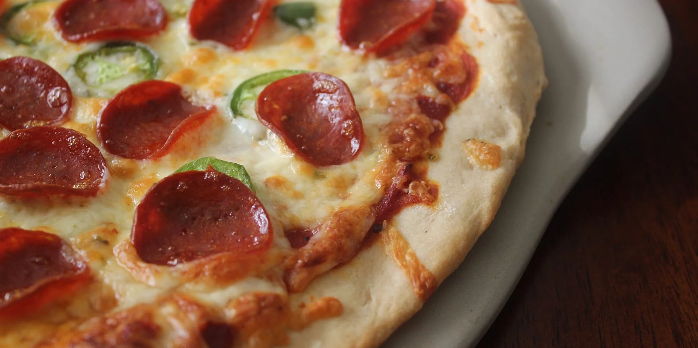

The company sells these in two serving sizes. The Bulk Bag icludes ine bulk bag of Dippin' Dots and 30 plastic spoons and cups. While, the Single Serve includes one portion of Dippin' Dots in a pouch with a plastic sppon. The treats are usually sold at several events acorss 14 countries. 10/10 would reccomend to a friend.
Pizza
September 23, 2021 by Kali Soutar
 It is said that the first Pizza was made in southwestern Italy. It started of as simple flat bread with toppings but has now evloved. Pizza was not popular outside of Italy until World War II. Pizza has now become a common meal that can incorprate food from different cultures as toppings are limitless. The main ingredients of pizza are the crust, sauce, cheese and the toppings. The toppings on pizza can usual lead to debate for example if Pinapples slices should go on pizza. The simple answer to this is no, well for me that is.The most common pizza topping is pepperoni and I mean do you really need an epalanation for that? Clearly its the most common for a reason. In Jamaica we have a few Pizza places for example, Pizza Hut, Domino's, Little Caesars,Pizza Please and others.
Dippin' Dots
September 12, 2021 by Kali Soutar